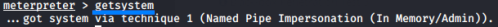

getsystem (meterpreter)
getsystem(until Windows 7)
GitHub source code:
https://github.com/rapid7/metasploit-payloads/tree/d672097e9989e0b4caecfad08ca9debc8e50bb0c/c/meterpreter/source/extensions/privWhen using exploits, you
might gain access as only a local user. This limits what you can do on the target machine. You can use Meterpreters
'getsystem` command (
https://github.com/rapid7/metasploit-payloads/blob/master/c/meterpreter/source/extensions/priv/elevate.c)
to elevate your permissions from a local administrator to SYSTEM.
•
elevate.c
◇
→ function that get the information of the
system
◇
→ function that execute the
windows privilege technique
elevate_getsystem will execute these three elevation techniques in the
following order until one succeed or all fail:
▪
Named Pipe Impersonation (In Memory/Admin) →
function:
elevate_via_service_namedpipe
require local admin permissions
https://github.com/rapid7/metasploit-payloads/blob/master/c/meterpreter/source/extensions/priv/namedpipe.c
1> Creates a named pipe controlled by Meterpreter
2> Then a cmd.exe is created as local system (running
as SYSTEM) which runs a command that interacts directly with the named pipe.
3> Meterpreter then
impersonates the connected process to get an impersonation access token (with the SYSTEM security context).
4> The access token is then assigned to all subsequent Meterpreter threads, meaning they run with SYSTEM
privileges.
▪
Named Pipe Impersonation (Dropper/Admin) → function:
elevate_via_service_namedpipe2 require local admin permissions
https://github.com/rapid7/metasploit-payloads/blob/master/c/meterpreter/source/extensions/priv/namedpipe.c
Very similar to Named Pipe Impersonation (In Memory/Admin).
1> Creates a named pipe controlled by
Meterpreter
2> instead of using a cmd.exe to create the SYSTEM user, it uses a DLL file written to the
disk.
3> runs rundll32.exe to run the DLL file as SYSTEM.
4> The DLL file connects to Meterpreter
and now you have SYSTEM permissions.
▪
Token Duplication (In Memory/Admin) → function:
elevate_via_service_tokendup
requires the SeDebugPrivilege privilege, limited to x86 architectures. https://github.com/rapid7/metasploit-payloads/blob/master/c/meterpreter/source/extensions/priv/tokendup.c
1> finds a service running as SYSTEM which it injects a DLL into.
2> The DLL duplicates the access token
of the service and assigns it to Meterpreter.
This is the only technique that does not have to create a
service, and operates entirely in memory.
getsystem should
not be thought of as a user -> admin privilege escalation method in modern
systemsBibliography:
•
https://docs.rapid7.com/metasploit/meterpreter-getsystem/